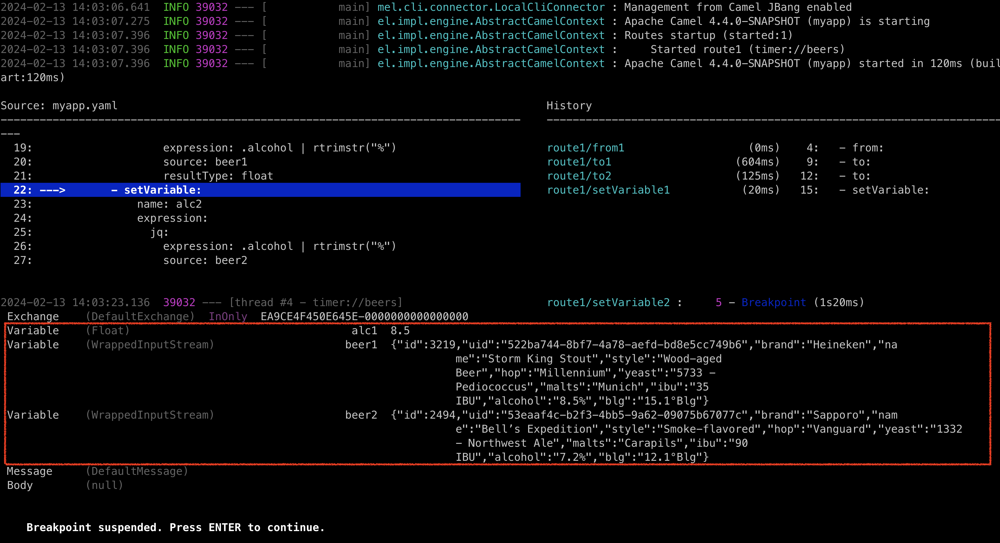

Apache Camel 4.4 (LTS) has just been released.
This release introduces a set of new features and noticeable improvements that we will cover in this blog post.
Camel Core
The simple language has been improved with hash function, and further improved the embedded functions for jsonpath, jq and xpath making it easier to grab data from JSon or XML within your simple expression or predicates.
We have optimized data formats to avoid converting payload to byte[] when unmarshalling, but allowing each data format to unmarshal the payload as-is.
Added JMX MBean operation to update routes at runtime via XML format (requires turning on this feature with setting JmxUpdateRouteEnabled=true). This can be useful for tooling where you can then change routes during troubleshooting an existing running Camel integration.
The internal code on the core was adjusted to use a monotonic time source, via an internal Clock API, to provide more accurate duration reporting. Additionally, we cleaned up usages of restricted identifiers across the code base, consolidated exchange constructors, and applied fixes to improve handling of interrupts.
DSL
We refactored the Throttle EIP implementation to allow supporting two different modes of throttling.
Variables
The biggest new feature in Camel 4.4 is the introduction of variables.
A variable is a key/value that can hold a value that can either be private per Exchange, or shared per route, or per Camel context.
With variables, you can now more easily share data between routes and/or globally. Variables are also readily accessible from EIPs and languages, just as message headers or exchange properties are. In other words, they have been added as first-class primitives into Camel.
You can find a small example here:
We also made a selected number of EIPs to have special use of variables. The idea is to make it easier to collect various sets of data from external systems using Camel components and commonly used EIPs, without any ceremony to prepare message body and headers, and cleanup afterward (i.e., removing HTTP headers).
And you can find a small example here using variables with EIPs:
The JBang debugger can also show variables if enabled with --show-exchange-variables, as shown in the screenshot below:
camel debug * --show-exchange-variables

In the screenshot, you can see three variables:
alc1- Is a float with the alcohol percentage of beer 1beer1- Is the json structure of beer1beer2- Is the json structure of beer2
The debugger is suspended (blue) in the Camel route where we are about to set variable alc2 computed as follows:
- setVariable:
name: alc2
expression:
jq:
expression: .alcohol | rtrimstr("%")
source: beer2
resultType: float
Here you can see the alc2 variable is set from a jq expression that grabs the alcohol field, and remove the % sign. The source (input) is from another variable named beer2. You can also specify header:myHeader to refer to a header, or if you remove source then the message body is used as input (default). The result is converted to a Java float,
NOTE: If you take a closer look in the screenshot above, then the debugger reveals that the Exchange has no message headers, and that the message body is empty (null). The example is exclusively using variables to gather and compute data; without the need to store and restore data on message header/body during routing. This is a cleaner and more elegant practice.
Camel JBang (Camel CLI)
We have continued investing in Camel JBang, and this time we have some great new stuff in the release.
The camel-jbang now supports new commands as plugins. And the first set of commands is camel-k commands, that allows to use camel-jbang to manage and operate Camel K integrations.
You can now run camel-jbang with --prompt that lets users type in placeholder values during startup, making it easy to build examples and prototypes that can easily be customized to users need, when trying.
You can now more easily run camel-jbang with custom log4j2.properties file to use your logging configuration, instead of the built-in logging.
Added support for using Jolokia 2.x with camel-jbang.
Upgraded to Hawtio 3.x when running camel hawtio.
Kamelets
When using Kamelets then the route snippets do not use any error handler. This means that when calling a Kamelet then if any error happens these are thrown back, and allows to use your current error handling configuration. This avoids any confusion, and you can regard calling a Kamelet just as calling a component; If they fail the exception is thrown back.
Camel Kafka
The Kafka component was improved to support batching, which makes it possible to consume and handle a set of Kafka consumer records as one Camel Exchange. For greater flexibility, the Kafka component can support both automatic and manual commits.
This version also brings fixes for the Kafka idempotent repository and unifies the setup of the commit manager.
Spring and Spring Boot
We have changed the recommended ordering of BOM from:
spring-boot-dependenciescamel-spring-boot-bom
… to reverse the order, so Camel comes first:
camel-spring-boot-bomspring-boot-dependencies
See more in the upgrade guide.
Upgraded to latest Spring Boot 3.2.2 release.
Kotlin API
We have introduced new experimental Kotlin API for defining Camel routes in Kotlin with the camel-kotlin-api JAR. This provides Kotlin type-safe builders as building blocks of Camel entities.
Kotlin API is not the replacement of Kotlin DSL (it is a separate module for now). While it is experimental there may be breaking changes in upcoming releases.
Miscellaneous
The camel-grpc component can now do full streaming in proxy mode.
The camel-netty component has added support for using KQueue native transport.
The camel-jms component now adds a header to the Message with the actual JMS destination the message was sent to, this is useful information, when using dynamic computed queue names.
The camel-kubernetes component can now auto-create KubernetesClient if needed, making it easier to use when running inside a Kubernetes pod.
Upgraded many third-party dependencies to the latest release at the time of release.
New Components
camel-beanio- Added back: Marshal and unmarshal Java beans to and from flat files (such as CSV, delimited, or fixed length formats).camel-jte- Transform messages using a Java-based template engine (JTE).camel-wasm- Invoke Wasm functions.kotlin-api- API for the new Kotlin DSL
Upgrading
Make sure to read the upgrade guide if you are upgrading from a previous Camel version.
If you are upgrading from, for example, 4.0 to 4.4, then make sure to follow the upgrade guides for each release in-between, i.e. 4.0 -> 4.1, 4.1 -> 4.2, and so forth.
Release Notes
You can find more information about this release in the list of JIRA tickets resolved in the release:
You can also find blog posts What’s new in the previous releases since last LTS
Roadmap
The following 4.5 release (non LTS) is planned for April/May 2024.